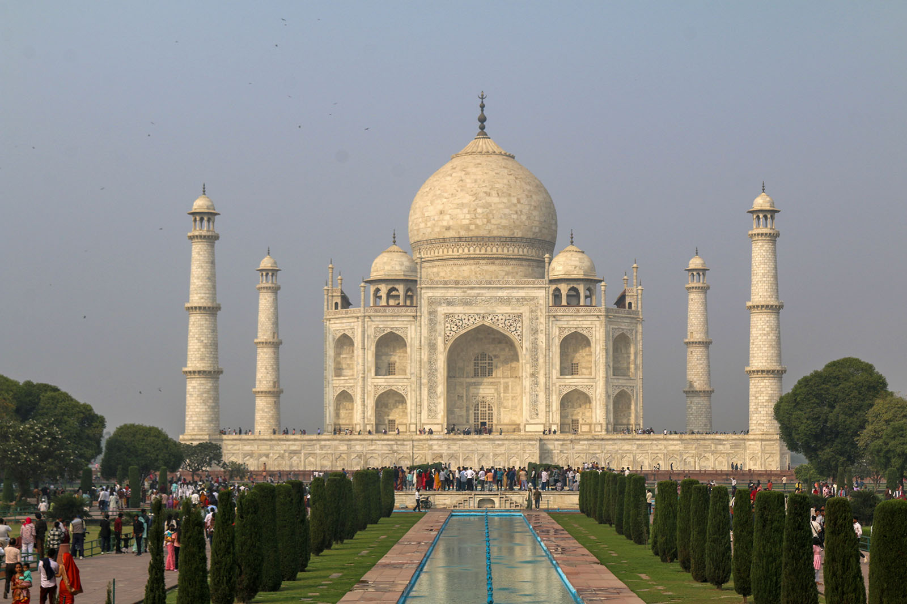

Chapter 7 of 22
A Day at the Taj Mahal

Today we visited the Taj Mahal.
But that’s not all. There’s so much more to it, and this is why you’re reading this. So, relax, grab a cup of tea, and join me on this incredible day trip.
The Journey to Agra
We left for Agra right after Fajr prayers and Dars, skipping breakfast. The goal was to leave Delhi before the Monday morning rush made travel impossible.
Our hosts had arranged two luxury, comfortable buses for us, each capable of holding about 45 people. These buses are with us for the entirety of the trip—day and night—and will even take us to Qadian later on, InshaAllah.
From Masjid Baitul Hadi to the Taj Mahal in Agra, it’s roughly a three-and-a-half-hour drive. About halfway there, we stopped at a restaurant for breakfast.
And, with no disrespect to anyone else’s cooking, it’s safe to say this was one of the best meals we’ve had so far!
We enjoyed channa poori with a vegetable dish. Some opted for aloo paranthas. To top it all off, ginger-flavored tea served in mini clay cups was the perfect icing on the cake. (No, there wasn’t any actual cake—just an expression!)
Arriving in Agra
Agra, a city rich in history, was once the capital of the Mughal Empire. It is also the birthplace of our legendary poet, Mirza Ghalib, before he moved to Delhi.
Upon arriving, we parked the buses and rented trolleys—small resort-style vehicles that can seat about 12-15 people. The trolleys took us to the gates of the Taj Mahal. After ticketing and processing, we finally entered the courtyards of this magnificent wonder.
The first glimpse of the Taj Mahal is truly breathtaking.
About the Taj Mahal
The Taj Mahal, built by Emperor Shah Jahan in memory of his beloved wife Mumtaz Mahal, is one of the Seven Wonders of the World. It took over 20 years to construct and involved thousands of artisans.
Its design is a perfect balance of symmetry, except for Shah Jahan’s own grave, which lies beside Mumtaz’s tomb inside the mausoleum. A popular legend claims that Shah Jahan planned a matching mausoleum in black marble across the Yamuna River. However, established archaeological evidence does not support that story; it remains part of the Taj Mahal’s folklore rather than a confirmed historical plan.
The Taj Mahal is flanked by a mosque on the left, a guesthouse on the right, and the Yamuna River flowing serenely behind it. Its beauty and design leave you in awe.
Exploring the Site
Sahir Ludhianvi once wrote:
By relying on his wealth, an emperor Has mocked the love of all of us poor.
After some initial group photos, we were given two hours to explore the site. Our tickets included access to the interior of the Taj Mahal, where we had to wear shoe covers to protect the historic marble floors. Walking inside, surrounded by intricate carvings and centuries-old craftsmanship, felt like stepping back in time.
Sitting on the marble lawns of the Taj Mahal, one can’t help but reflect on the depth of Shah Jahan’s love for Mumtaz. It makes you wonder: Would we build a Taj Mahal for our loved ones if we had the means?
Although Hazrat Promised Messiah (as) never built a physical monument like the Taj Mahal, his love for Allah, the Holy Qur’an, and the Holy Prophet Muhammad (saw) was unparalleled:
The light of the Qur’an shines brighter than any other.
Exalted is He, the source of this radiant river.
After Allah, I am intoxicated in the love of Muhammad (saw).
If this is disbelief, then by God, I am the greatest disbeliever.
This love of the Promised Messiah (as) has built the Taj Mahal of Ahmadiyyat. These young Waqf-e-Nau children are its future masons, guardians, and caretakers. Ahmadiyyat will endure forever, as long as we continue to serve and support Khilafat.
Historical Connections
There is no record in Ahmadiyya history to confirm whether Hazrat Promised Messiah (as) or Hazrat Khalifatul Masih I (ra) ever visited the Taj Mahal.
However, history records that on 23 October 1938, the famous Urdu writer Mirza Farhatullah Baig invited Hazrat Musleh Maud (ra) to a special reception. The following day, Huzoor (ra) visited Golconda, Bala Hissar, the Taj Mahal, and Fatehpur Sikri in Agra.
Additionally, Hazrat Khalifatul Masih IV (rh) visited Qadian in 1991 during his visit to India. Similarly, our current beloved Imam, Hazrat Khalifatul Masih V (aba), visited the Taj Mahal during his 2005 trip.
Wrapping Up the Day
At the end of our visit, we took more group photos and slowly made our way back to the buses. Thanks to our hosts, a delicious dinner was waiting for us at our seats.
After dinner and Maghrib and Isha prayers, we reflected on the day we had and began mentally preparing for tomorrow.
Truly, this journey to the Taj Mahal was not just about seeing a historic monument but about drawing comparisons between earthly love and the divine love taught by Islam Ahmadiyyat. This was a day to remember.